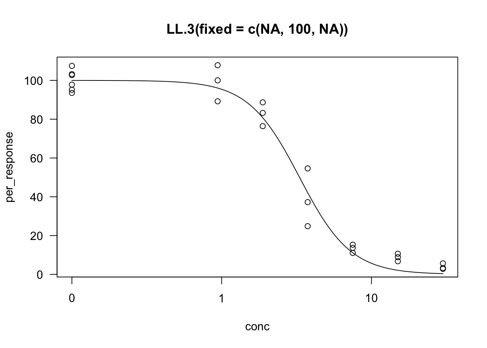

Use nls mostly, but it can be quite clunky to use. Consider more robust tool
24.2 Dose Response Curves
Dose Response curves are popular in the physical sciences and many biological methods also require some form of calibration.
For example, spectroscopy is common to determine the concentration of a particular analyte in a solution. This involves shining a light onto the chemical.
transmittance : T = I / I_0 light intensity measured by the initial light intensity supplied
absorbance : \log T the amount of light absorbed, the signal
If we want to work on a percentage scale 0-100, we can transform our data and then fix some parameters of the log logistic function that’s being fit.
Code
mean_rootl_control <-mean(ryegrass$rootl[ryegrass$conc ==0])ryegrass_relative <- ryegrass |>mutate(per_response = rootl/ mean_rootl_control *100)mod_fixed <-drm(per_response~conc, data = ryegrass_relative,fct =LL.3(fixed =c(NA, 100, NA),names =c("Slope", "Upper Limit", "ED50"))) # LL3 lower bound is 0, and we fix upper bound to be 100plot(mod_fixed, main ="LL.3(fixed = c(NA, 100, NA))", type ="all")

We use mselect to choose a model from a list of models. maED to do model averaging
Code
# Model selectionmselect(mod, fctList =list(W1.3(fixed=c(NA, 100, NA)),W1.4(), W2.3(fixed=c(NA, 100, NA)), W2.4(), LL.4()),linreg=TRUE) |>suppressWarnings() # not sure why warnings are produced
logLik IC Lack of fit Res var
W2.4 -15.91352 41.82703 9.450713e-01 0.2646283
LL.4 -16.15514 42.31029 8.664830e-01 0.2700107
LL.4 -16.15514 42.31029 8.664830e-01 0.2700107
W1.4 -17.46720 44.93439 4.505676e-01 0.3012075
Cubic -25.53428 61.06856 NA 0.5899609
Quad -35.11558 78.23116 NA 1.2485122
Lin -50.47554 106.95109 NA 4.2863247
W1.3 -74.48596 154.97191 1.808628e-17 31.6993835
W2.3 -74.49140 154.98280 1.801677e-17 31.7137648
Code
# here the interpretation is we can calculate effective dose for 10 and 50, using the averages of all the models included in the listmaED(mod, list(W2.4(),LL.4(),LL.3(fixed=c(NA, 100, NA)),W1.4()),c(10, 50), interval="kang")